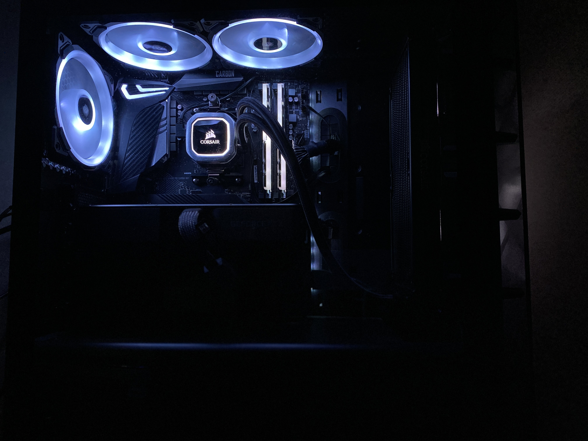

Video Games
My favorite thing to do during my free time (and after I finish all of my school work) is playing video games. Since I entered college, I haven't had as much time to play video games, but I used to play a lot more in the past. Currently, my favorite game is called Valorant, a FPS created by Riot Games. Click here to learn more about the game!
Building Computers
Another thing I like to do whenever I have a lot of time is building computers/PCs. I built my first computer in my sophomore year of high school to play vieo games, but ever since then, I have just loved building computers for fun!
Here is a picture of the very first PC I built!